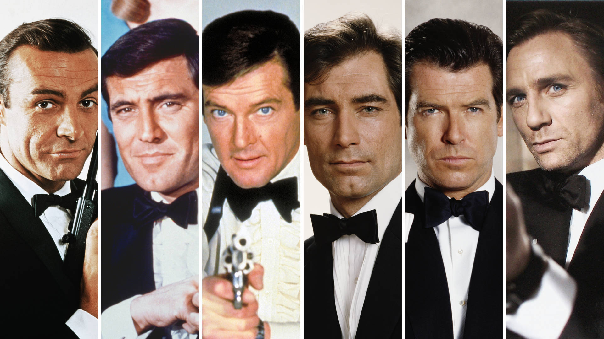
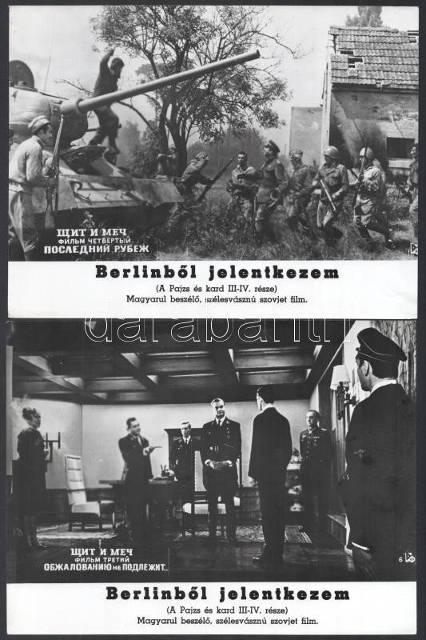
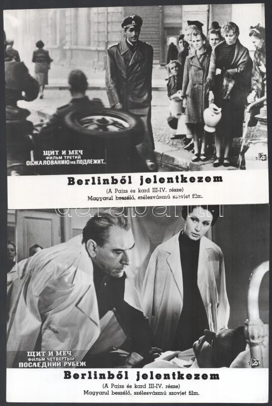
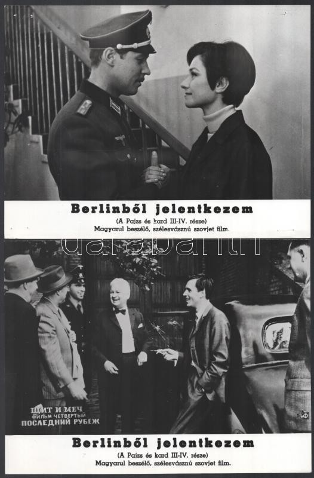

James Bond karakterét Ian Fleming alkotta meg 1953-ban. James Bond a Britt tikosszolgálat embere és a feladata mindig a hazájának vag a világank biztonságára veszélyes nagy hatalmú, kiterjedt szervezetek megbuktatása, vezetőik likvidálása.Az EON Productions 25 filmet gyártott vele, valamint készült két függetlenül forgatott film, továbbá egy tévéfilm is Fleming első regénye alapján. Sokan csak az előbbi 25 filmet tekintik „hivatalosnak”. 1974-ig Albert R. Broccoli és Harry Saltzman készítették ezek legtöbbjét, amikor is Broccoli lett az egyedüli producer. Broccoli halálát követően 1995 után a lánya, Barbara Broccoli és mostohafia, Michael G. Wilson folytatták a filmek készítését. Wilson amúgy több Bond-film kisebb szerepeit is eljátszotta. 1962-től kezdve eddig összesen hat színész alakította Bondot a hivatalos sorozatban, származásukat tekintve javarészt britek. A kivételek: George Lazenby (ausztrál) és Pierce Brosnan (ír). Kronológiai sorrendben:
James Bond a brit hírszerzéssel foglalkozó ügynökség, az MI6 (Military Intelligence Section 6 – Katonai Hírszerzés 6-os részleg), más néven SIS (Secret Intelligence Service) nulla-nullás besorolású ügynöke. A cég fedőneve korábban Universal Exports volt. A dupla nullás besorolású ügynököknek különleges engedélyük van: embert ölhetnek a küldetés sikerének érdekében, külön parancs nélkül, saját megítélésük alapján. Bond hátterét részben Fleming leírásaiból, részben a filmekben elhangzó utalások alapján lehet megismerni. Andrew Bond és Monique Delacroix gyermekeként született, apja egy skót fegyvergyár külterületi képviselője volt. Bond tizenegy éves korában vesztette el szüleit, amikor szakadékba zuhantak egy hegymászótúra során Chamonix közelében. Ezután nagynénje, Charmian Bond nevelte. Később Cambridge-ben tanult, majd a Brit Királyi Haditengerészetnél szolgált, s valamikor ezt követően vált belőle kém. Eredeti személyleírása szerinti magassága 183 cm, súlya 76 kg; testalkata karcsú, haja fekete, szeme kék. Jobb arcán függőleges sebhely látható, bár az első filmekben a sebhely a hátán van. Kitűnő sportoló, nagyszerű céllövő, bokszoló, értője a közelharcnak, mestere a késdobásnak. Az angol mellett németül és franciául beszél, illetve a filmekben néha más nyelveken is megszólal. A regényben erős dohányos, a filmekben idővel egyre ritkábban gyújt rá. Kedveli a szerencsejátékot, valamint mértékkel az alkoholt, és nagy hódolója a nőknek. A filmekben néha rövid időre mások bőrébe bújik, amúgy viszont mindig önmagát adja. Provokatív viselkedésű, s gyakran ironizál. Fedőneve a „007-es”.
A filmek jellegzetes nyitánya az ellenség pisztolycsövének perspektívája: feltűnik egy fehér kör, ami egy Bondot célba vevő, huzagolt fegyvercső, de ő hirtelen szembefordul, lő és a képet elárasztja a lefolyó vér. Ezután egy mozgalmas előzmény következik, majd a főcím a külön a filmhez írt főcímdallal , amiben lenge öltözetű nők, fegyverek, és más, az adott film témájába vágó motívumok színes összeállítása sorjázik. Ezeket Maurice Binder látványtervező találta ki, amik idővel szintén a sorozat védjegyeivé váltak. Daniel Craig első három filmjénél az „újítás jegyében" máshova került a pisztolycsöves motívum, ettől eltekintve az előzmény és a főcím maradt. Előzmény csak a legelső Bond-filmből, a Dr. No-ból hiányzik, ahogy a saját főcímdal is.
Bond főnöke, a titkosszolgálat – fedőnevén Universal Exports – igazgatója, aki a különböző küldetésekre küldi Bondot, gyakran a miniszterelnök vagy a hadügyminiszter közvetlen utasítására. Nem egyszer vitázik vagy kerül ellentétbe Bonddal egy ügy megoldása kapcsán, de alapvetően kedveli Bondot, már csak a hatékonysága miatt is.
Q-t Boothroyd őrnagyként is ismerhetjük, ő az ellátmányos osztály főnöke, aki rendszerint ellátja Bondot valamilyen átlagos használati tárgynak tűnő, különleges eszközzel. Ezek legtöbbször jeladóval, robbanószerekkel, fegyverekkel, golyóálló vagy más funkcióval felvértezett holmik, mint pl. autó, aktatáska, karóra, toll. Az adott történetben kapott eszközt természetesen módjában is lesz kipróbálni. Q és Bond között alapvetően baráti a viszony, csak akkor neheztel Bondra, amikor az az eszközeivel kezd el játszadozni a műhelyében, vagy a kapott felszerelést tönkreteszi a bevetés során.
M titkárnője, aki gyakran flörtöl Bonddal, és ez sokszor nem is marad viszonzatlan, bár a vonzalmuk megmarad a szavak szintjén. Ilyenkor M rendszerint kiszól telefonon a titkárnőjének, tudván, hogy feltartja emberét és gyorsan véget vet a csevegésnek. Moneypenny ismeri Bond számtalan nőügyét, emiatt sokszor tesz erre célzó, humoros, kétértelmű megjegyzéseket.
M asszisztense és helyettese, aki amolyan különleges titkári pozícióban dolgozik közvetlenül M alatt. Korábban ritkán tűnt fel a filmekben, később vált gyakori visszatérő szereplővé.
Bond CIA-s kollégája, aki elsősorban akkor segít Bondnak, ha annak Amerikában akad dolga. Felix is ismeri Bond életvitelét, így ő is szokott néha megjegyzéseket tenni rá. Jó szándékú karakter, de nem olyan dörzsölt, mint Bond.
Tudtad-e?
Az idők során amerikai szinészek is szóba kerültek Bond szerepével kaocsolatban, de egyiküknek sem sikerült eljátsaniuk. Azóta "hagyománnyá" vált, hogy Bondot bfittszinész játsza.
A filmek listája kronológiai sorrenben a James Bondot játszó színészekkel együtt itt megtekinthető vagy letölthető táblázatban
1909 április 22-én született a Szibériai Narimban. A neve ororszul: Вадим Михайлович Кожевников. A Moszkvai Állami Egyetemen tanult irodalmat és etnológiát, 1933-ban szerzett diplomát. 1941 és 1945 a Pravada című lap tudósítója volt, 1943-ban belépett a Szovjetunió Kommunista Pártjába.1949-ben a Szovjet Írószövetség titkárává választották. Irodalmi munkásságáért a Szocialista Munka Hőse kitüntetésben részesült, 1971-ben a Szovjetunió Állami Díját is megkapta.
A keletkezéséről nem találtam túl soki információt de a mit talákltam azt leírom.
Az író a regényben történő kémakciók a valóságban is megtörténtek, igaz szinte az összes akciót más-más ügynökök hajtották végre. Az író azérrt, hogy qa minél hitelesebben tudja leírni a II. világháborúban lévő szokásokat, ruhákat ésaz egyéb körülményeket nagyon sokat időt töltött ezen időszakban keletkezett írásos források elemezésével.
1940 nyarán Rigában, a Német Birodalomba készülő repatriáltak között találjuk Johann Weiss lakatost. A törekvő, náci érzelmű fiatalember valójában a szovjet elhárítás különlegesen kiképzett, rendkívül sokoldalú és tehetséges felderítő tisztje, akit felettesei azzal indítanak útnak, hogy igyekezzék teljesen beolvadni a németek közé, és szerezzen, illetve továbbítson értesüléseket elöljáróinak. A fiatalember kitűnően beszéli a német nyelvet, félelmetes memóriája, nagy műveltsége és rendkívüli akaratereje van; szerény és fegyelmezett magatartásával, okosságával és lélekjelenlétével sofőrből hamarosan a Biztonsági Szolgálat tisztjévé küzdi föl magát, bejut a legmagasabb helyekre és felbecsülhetetlen fontosságú értesüléseivel, valamint a vezetése alatt tevékenykedő partizáncsoporttal hősiesen veszi ki részét a Szovjetunió Nagy Honvédő Háborújából. Munkája során megjárja a koncentrációs táborokat, fogolytáborokat, de a berlini hatalmasságok palotáit is, és Schellenbergnek, Himmler jobb kezének egyik igen bizalmas munkatársa lesz. Tevékenységét egészen a háború végéig, a hitleri Németország leveréséig folytatja, és csak az utolsó pillanatban fenyegeti a leleplezés veszélye, ekkor azonban már a szovjet fegyverek veszik át a szót Berlin felett. Kozsevnyikov könyve a második világháború egyik legizgalmasabb históriáját ismerteti meg az olvasóval.
A könyv törtrénetét megfilmesétették a Szovjetunió idejében és magyarul a Pajzs és Kard televíziós sorozat 3. és 4. részét képezte. Sajnos a filmmel kapcsolatban sem találtam több i9nformációt, de a keresgélés közben megtaláltam a film plakátjait.